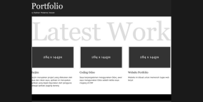

Latest Work
-
Jarjim
Jarjim merupakan project yang dilakukan oleh saya dan rekan saya, aplikasi ini merupakan aplikasi yang dapat digunakan oleh pengguna sebagai aplikasi jogging bareng
-

Coding Odoo
Saya berpengalaman menggunakan Odoo, awal saya menggunakan Odoo adalah ketika saya magang di CNT
-

Website Portfolio
Website ini dibuat untuk memenuhi tugas web lanjut (Meskipun di ubah ubah dikit :v)